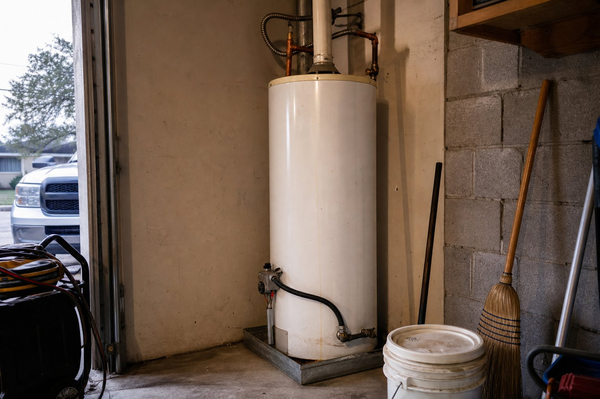
DIY Tutorial··4 min
7 Reasons Your Hot Water Goes Cold Quickly
A short shower is rarely a mystery. Work through these seven causes in order and you will usually land on it in ten…
Read the guideDIY guides & plumbing tips
The shop's master plumber publishes these precisely so fewer people pay for a call they could have done in ten minutes — and so nobody attempts the work that needs a licence.
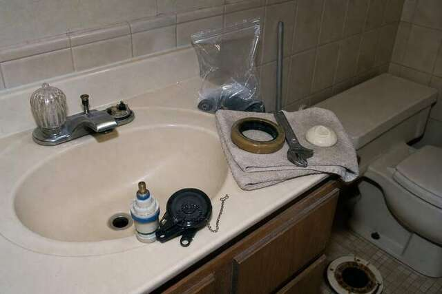
20 published guides
Written by the shop, dated as published, and each one ends where the licensed work begins.
20 guides

DIY Tutorial··4 min
A short shower is rarely a mystery. Work through these seven causes in order and you will usually land on it in ten…
Read the guideDIY Tutorial··3 min
A wet cabinet with no dripping faucet almost always means the seal between the sink and the drain strainer has let…
Read the guide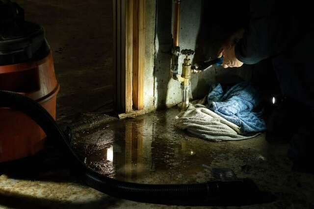
Plumbing Tips··4 min
A bill that jumps with nothing wet on the floor is nearly always one of these five. Four of them you can confirm…
Read the guide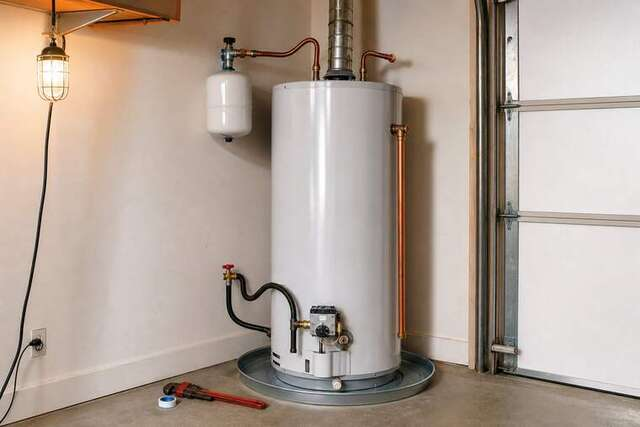
Plumbing Tips··4 min
Ninety-nine percent of the time that popping or knocking is water trapped under sediment boiling up through it.…
Read the guide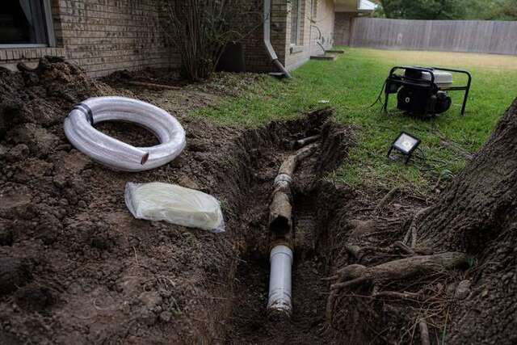
Services··3 min
East of the city sewer line, a septic system is not an option you choose — it is the only option. Which means the…
Read the guidePlumbing Tips··3 min
Since 2003 the case we have made to Baytown households for tankless is simple: you stop running out of hot water, and…
Read the guide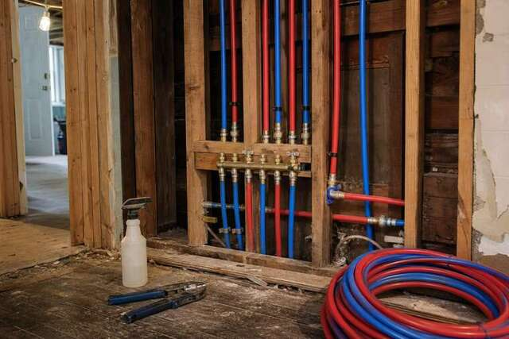
Plumbing Tips··5 min
As a master plumber I get called out to fix things most people can do themselves. Here are the ten that save around…
Read the guidePlumbing Tips··4 min
Hiring is hardest when the ceiling is wet and you have ten minutes. These are the ten checks we would want a customer…
Read the guide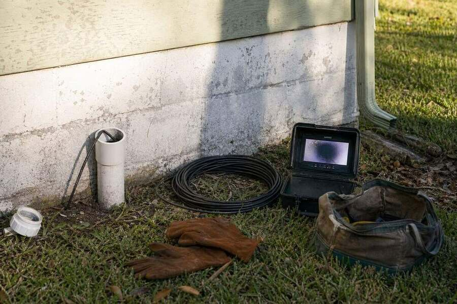
Plumbing Tips··4 min
A running toilet can cost hundreds on your water bill and the fix usually costs under ten dollars. All you need is a…
Read the guidePlumbing Tips··3 min
Five to ten minutes of hot water and then cold is one of the most common calls we take, and it is almost never the…
Read the guidePlumbing Tips··4 min
Tape applied the wrong way leaks and breaks valves. Three turns the right direction beats ten the wrong one — and the…
Read the guide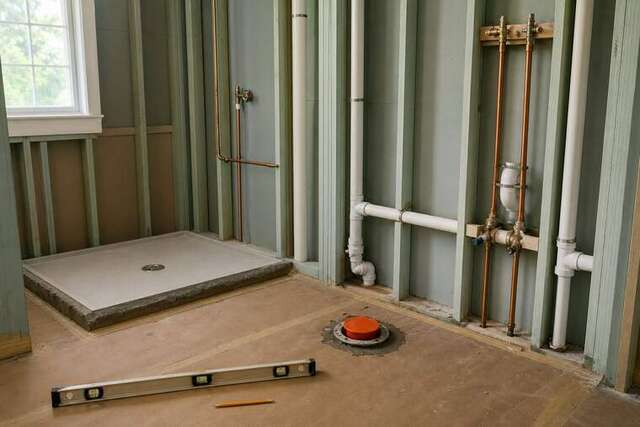
DIY Tutorial··5 min
The ball-type Delta single valve leaks for one of two reasons: the rubber seats and springs are worn, or the cam…
Read the guide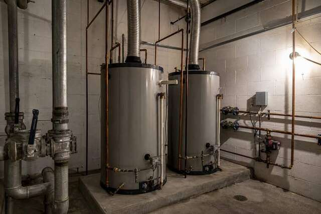
DIY Tutorial··6 min
The one-page map of a house: where your water comes in, where it goes out, what to shut off, and what to never touch.
Read the guidePlumbing Tips··4 min
Putty is what seals a drain to a sink. It is also the wrong answer in four very common situations, and using it there…
Read the guidePlumbing Tips··4 min
A repipe is one of the best-value jobs you can do in an older house and one of the worst things to do early. Answer…
Read the guidePlumbing Tips··3 min
Three things fix the vast majority of dripping faucets, and all three are a trip to the hardware store rather than a…
Read the guide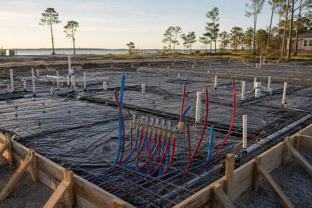
Plumbing Tips··5 min
Almost every clog we cut out is something that a two-minute habit would have prevented. Here is the routine we run…
Read the guide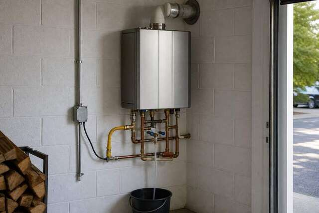
Plumbing Tips··4 min
Brown water is the pipe telling you something: rust, sediment, a dying water heater or a stir-up in the street. Here…
Read the guideEmergency··3 min
A gas smell is the one plumbing call where what you do in the first minute matters more than how fast we get there.
Read the guideEmergency··3 min
You cannot repair what you cannot locate. Underground leaks are almost never visible above ground, which is why the…
Read the guideWhere DIY stops
Everything on this page is safe to try. These are the ones where the cheap fix becomes an expensive claim.
Tried the fix and it is still doing the thing? Send the guide name and a photo — we will tell you honestly whether the next step is a part or a plumber.